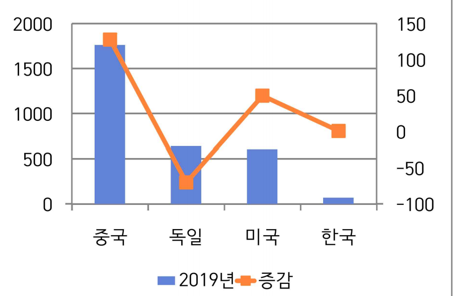

1. 개요
한 국 무역협회(Korea International Trade Association) 산하(傘下) 국제무역연구원이 12일 발표한 ‘세계 수출시장 1위 품목으로 본 우리 수출의 경쟁력 현황’ 보고서에 따르면 중국이 세계 수출시장 에서 독주 체제를 굳히는 반면에 우리나라는 정체 위기를 겪고 있는 것으로 나타났다. 2019년 중국은 전 체 5579개 품목(品目) 중 31.6%에 달하는 1762개 품목에서 세계 수출시장 점유율 1위를 기록해 최다 보 유국을 유지했다. 섬유(Textile), 철강(Steel), 화학제품 등 대부분의 품목에서 1위 품목수가 증가하면서 세 계 1위 품목을 전년 대비 128개 추가하여 빠른 속도로 세계 1위 품목 점유율을 높였다.
※ 국가별 1위 품목 수
| 구분 | 2017년 | 2018년 | 2019년 | 증감 |
|---|---|---|---|---|
| 중국 | 1569 | 1634 | 1762 | 128 |
| 독일 | 738 | 708 | 638 | -70 |
| 미국 | 567 | 557 | 607 | 50 |
| 한국 | 68 | 67 | 68 | 1 |
| 합계 | 2,942 | 2,966 | 3,075 |
국가별 1위 품목 수
2. 우수 국내 품목은 화학 제품
-
가. 우리나라의 1위 품목 수는 68개로 2017년 이후 큰 변화 없이 14위에 머물고 있다.
-
나. 우리나라 1위 품목별로 보면 화학제품, 철강 (鐵鋼), 섬유제품의 50개 품목이 주를 이뤘 으며, 화학제품, 메모리반도체 등 26개 품목 은 최근 5년간 세계 1위를 유지했다.
-
다. 식용 해초류, 사진필름(Film), 플라스틱 (Plastic) 제품 등 18개 품목이 세계 수출시 장 1위로 지난해 신규 진입한 반면에 축전 지, 프로펜(Propene), 철강제관 등 17개 품 목은 다른 나라에 1위를 넘겨주었다.
1) 자료: UN Comtrade
3. 세계시장에서의 위치
-
가. 우리나라 1위 품목 상당수는 세계시장의 주 요국들과 경합관계에 있는 것으로 나타났다.
-
나. 우리나라 세계 1위 품목 68개 중 절반 이상 인 40개 품목에서 중국, 미국, 독일, 일본과 경합하고 있다.
-
다. 불확실성이 확대되고 있는 현 시점에서 경합 중인 수출품목을 중심으로 혁신을 통한 기술 (Technology) 및 품질(Quality) 경쟁력을 확보해 나가는 것이 중요하다.
-
라. 우리 기업(企業)은 ICT(Information & Communication Technology) 융합 및 지 속적인 연구개발을 통해 제품의 고부가가치 화 및 차별화(Differences)와 더불어 자기 혁신 전략이 필요하다. 정부 차원에서는 FTA 또는 RCEP 혹은 TPP(Trans-Pacific Partnership) 등을 통해 기업들의 새로운 시장(市場) 진출환경 개선이 요구된다.
◎ 참고문헌
A Solution to the Border Puzzle. "The Economic Review, American Economic Association,(2003) ASEAN InvestmentReport,(2006)